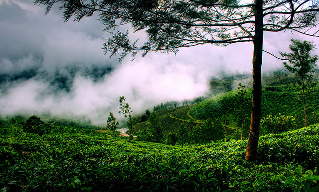
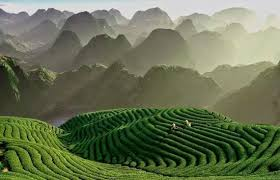
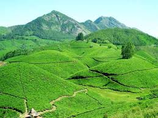
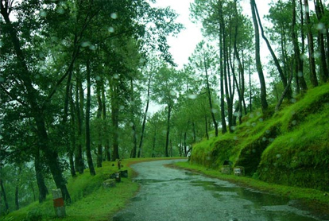
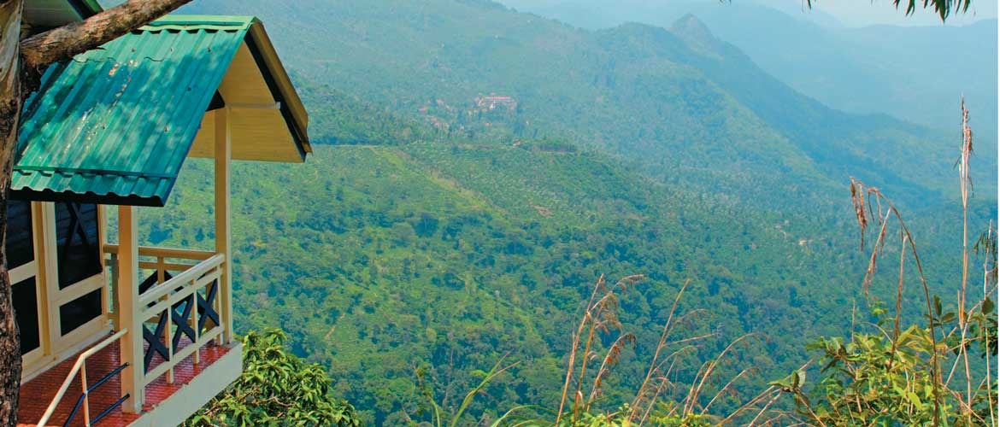
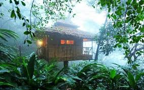
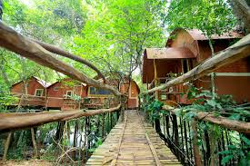
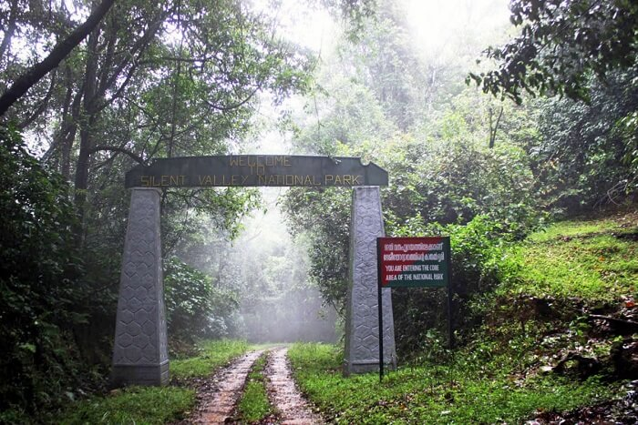
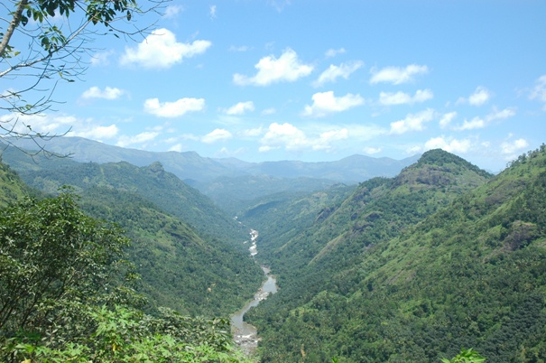
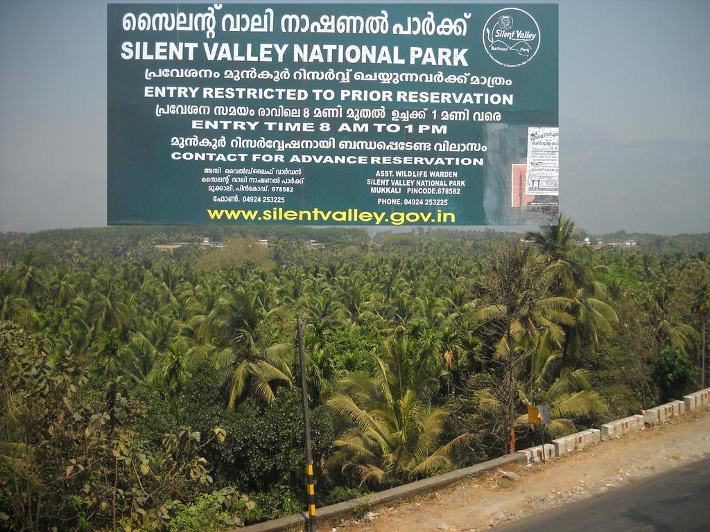

Munnar is a town and hill station located in the Idukki district of the southwestern Indian state of Kerala. Munnar is situated at around 1,600 metres (5,200 ft) above mean sea level,[2] in the Western Ghats mountain range. Munnar is called "Kashmir of South India".
   2.Ponmudi [1] (the Golden Peak) is a hill station in the Thiruvananthapuram District of Kerala in India. It is located 55.2 km north-east of Trivandrum City at an altitude of 1100 m. Ponmudi (Varayadumotta) peak is a part of the Western Ghats mountain range that runs parallel to the Arabian Sea
 Adavi (Malayalam: ????) is a major tourist destination in Konni, Kerala [1] situated in the banks of Kallar river. Eco-tourism project in Adavi is jointly launched by Kerala Tourism Development Corporation and Department of Forests and Wildlife, Kerala.
 Silent Valley National Park , is a national park with a core zone of 237.52 square kilometres (92 sq mi) (making it the second largest national park in Kerala). This national park has some rare species of flora and fauna. It is located in the Nilgiri hills, within the palakkad District of Kerala, South India.
  